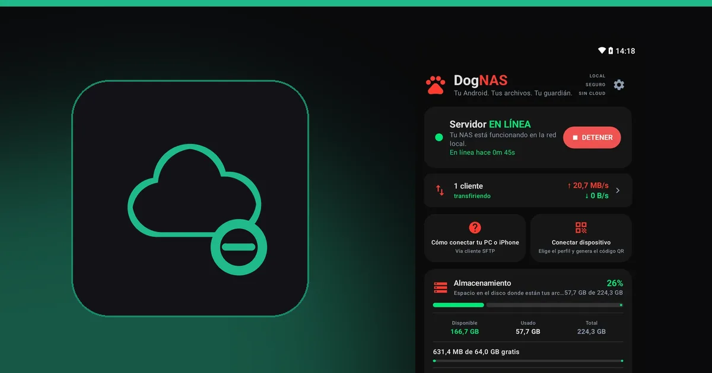
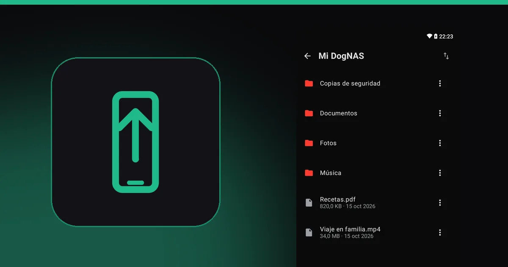
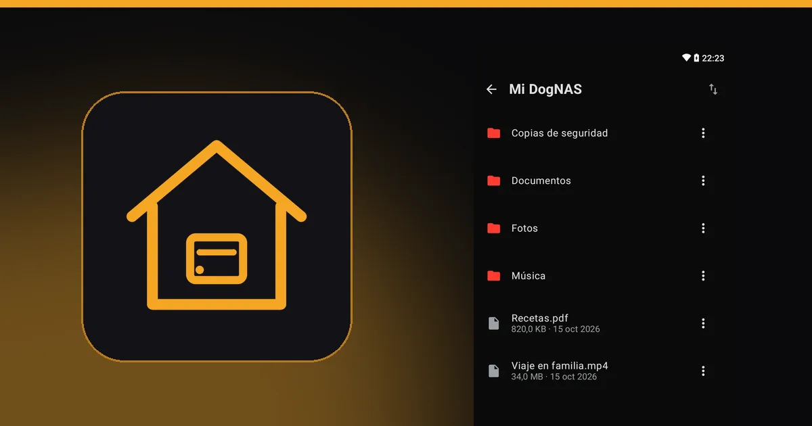
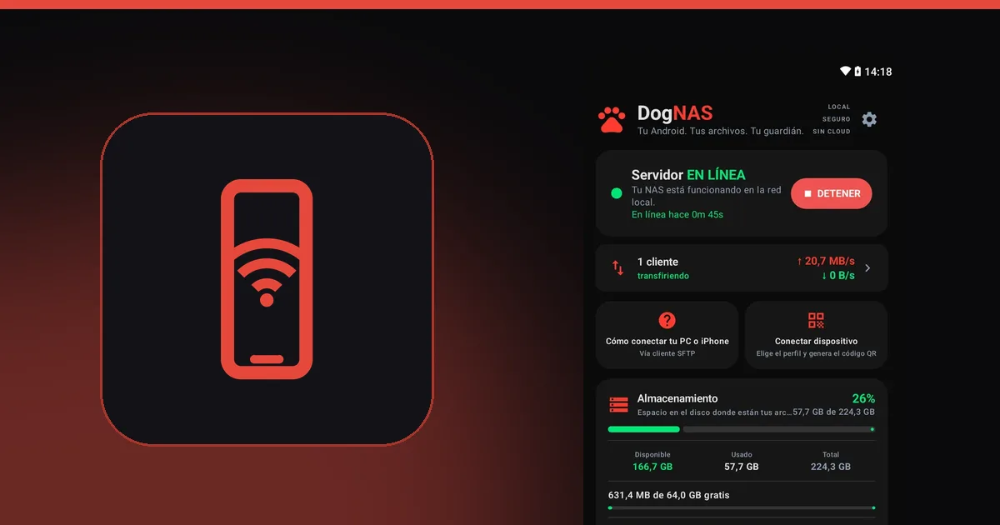
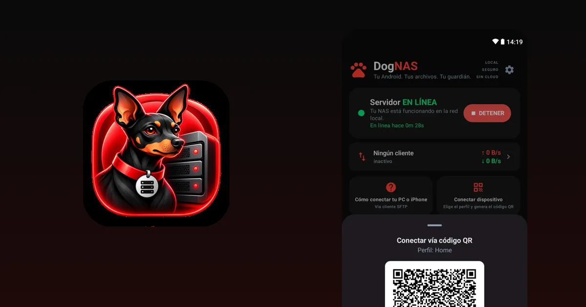
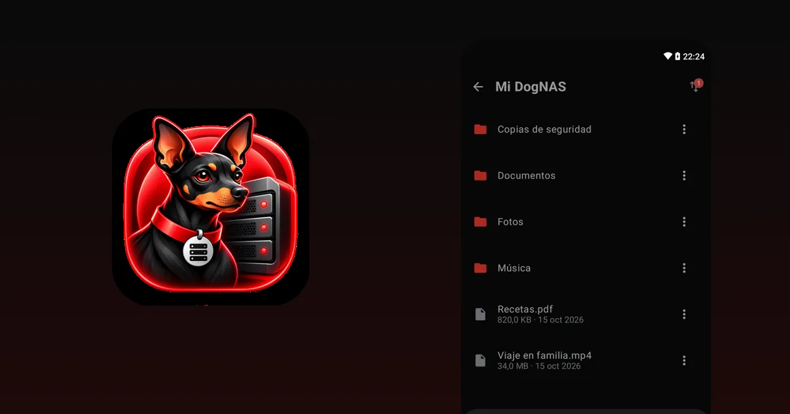

Blog DogNAS
Guías prácticas para usar tu Android como almacenamiento privado, sin nube.

GuíasCómo ahorrar en las suscripciones de almacenamiento en la nube
Antes de pagar más espacio en la nube, mira cómo revisar lo que usas, limpiar lo que sobra y guardar el resto en casa, sin mensualidad.

GuíasCómo liberar espacio en el celular Android sin perder tus fotos
Limpia lo que sobra en Android y lleva fotos y videos a un lugar seguro fuera del celular, sin pagar mensualidad de nube.

GuíasUn NAS casero sin comprar un NAS: usa el Android que ya tienes
Para guardar en casa las fotos, los videos y los documentos de la familia no siempre hace falta comprar un NAS. Mira cuándo basta un Android viejo y cuándo no.

GuíasCómo convertir un Android viejo en un servidor de archivos
Ese celular o tablet guardado en un cajón puede almacenar las fotos, los videos y los documentos de la casa por Wi-Fi, sin nube y sin mensualidad.

GuíasQué hacer con un celular Android viejo: 10 ideas que sí sirven
Cámara, webcam, centro multimedia, servidor de archivos y más: 10 usos para el Android que está parado en el cajón, y cómo elegir el mejor para ti.

GuíasCómo transferir archivos entre la PC y el celular por Wi-Fi, sin cable
Cable, nube, apps o un servidor propio en casa: las formas de pasar archivos de la PC al celular y viceversa, y cuándo conviene cada una.